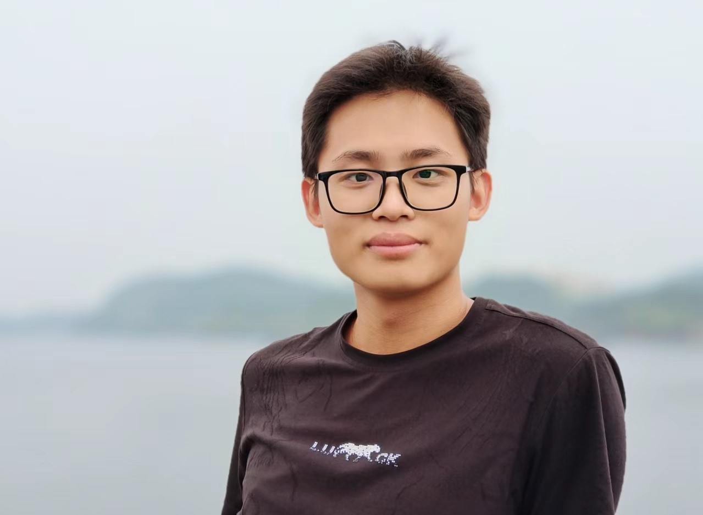
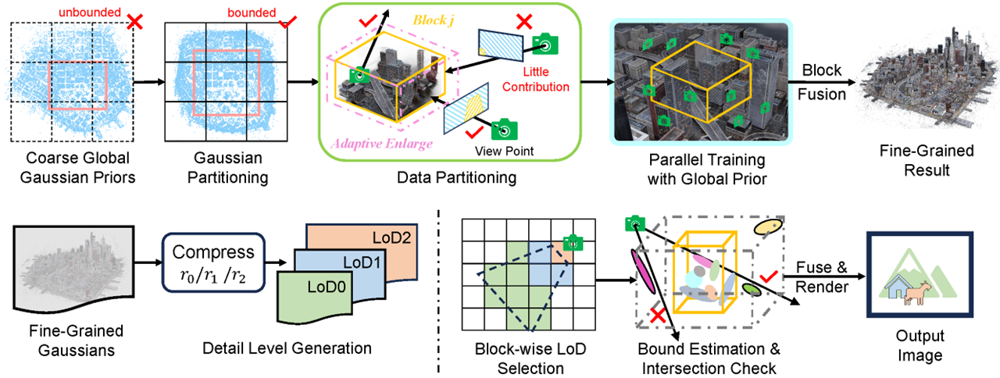
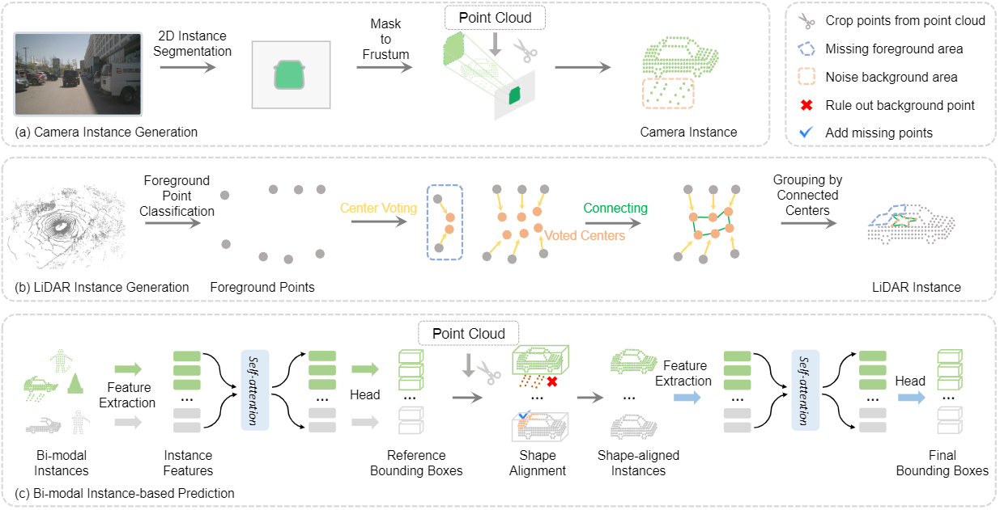
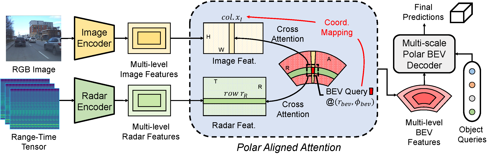

|
|

|
Yang Liu
Institute of Automation, Chinese Academy of Sciences
Beijing, 100190, P.R.China
Email: liuyang2022[at]ia.ac.cn
[Github]
[Google Scholar]
|
Biography
Yang Liu is currently a second year Ph.D. student at
the Center for Research on Intelligent Perception and Computing,
State Key Laboratory of Multimodal Artificial Intelligence Systems,
Institute of Automation,
Chinese Academy of Sciences,
under the supervision of Prof.
Zhaoxiang Zhang.
Before that, he got his Bachelor's degree in from
Yingcai Honors College (Elite program of UESTC, top 109 students selected from 5000 freshmen),
University of Electronic Science and Technology of China (UESTC) at June 2022.
His research focuses on computer vision and pattern recognition,
particularly on the following topics:
- Novel View Synthesis
- Large-Scale Scene Reconstruction
- Robust 3D Scene Perception
News
06/2024
|
One paper is accepted by ECCV 2024!
|
04/2024
|
One paper is accepted by TPAMI!
|
09/2023
|
One paper is accepted by NeurIPS 2023!
|
Publications
|

|
CityGaussian: Real-time High-quality Large-Scale Scene Rendering with Gaussians
Yang Liu,
He Guan,
Chuanchen Luo,
Lue Fan,
Naiyan Wang,
Junran Peng,
Zhaoxiang Zhang
[Paper (ECCV 2024)]
[Code]
|
|

|
Fully Sparse Fusion for 3D Object Detection
Yingyan Li,
Lue Fan,
Yang Liu,
Zehao Huang,
Yuntao Chen,
Naiyan Wang,
Zhaoxiang Zhang
[Paper (TPAMI)]
[Code]
|
|

|
Echoes Beyond Points: Unleashing the Power of Raw Radar Data in Multi-modality Fusion
Yang Liu,
Feng Wang,,
Naiyan Wang,
Zhaoxiang Zhang
[Paper (NeurIPS 2023)]
[Code]
|
Experiences
Academic Service
Conference Reviewer:
- International Conference on Learning Representations (ICLR), 2025
Journal Reviewer:
- Transactions on Visualization and Computer Graphics (TVCG)
- IEEE Transactions on Circuits and Systems for Video Technology (TCSVT)
Awards
04/2022
|
Sichuan Outstanding Graduates (top 0.5%)
|
12/2021
|
China National Scholarship (top 0.2%)
|
12/2021
|
Gratitude to Modern Chinese Scientists Scholarship (only 12 strudents granted)
|
12/2021
|
Most Influential Student of Yingcai Honors College (top 0.2% of all grades)
|
12/2021
|
Person of the Year of School of Information and Communication Engineering (top 0.2% of all grades)
|
12/2020
|
China National Encouragement Scholarship
|
12/2019
|
China National Scholarship (top 0.2%)
|
10/2018
|
Champion of "Electronic Cup" Debate Tournament
|
12/2017
|
First Price in National Olympiad in Physics in Hunan Province
|
|